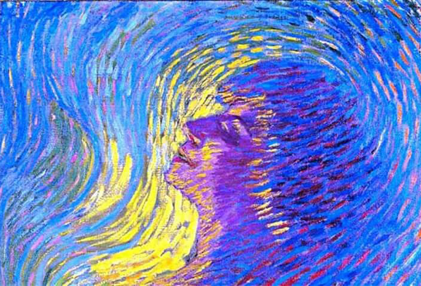
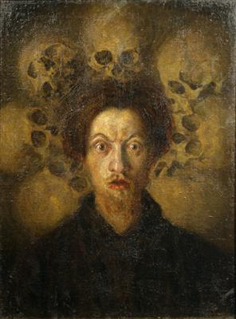

Luigi Carlo Filippo Russolo (30 de abril de 1885 - 4 de febrero de 1947) fue un compositor, pintor e inventor italiano. Futurista y firmante del manifiesto El arte de los ruidos (11 de marzo de 1913), en el que teorizó el uso del ruido para llegar a componer una música compuesta de ruidos en los sonidos puros en lugar de armónicos, se considera el primer artista en teorizar y practicar el concepto de música de ruido. Su música se interpretó con una familia de instrumentos que había inventado, los Intonarumori, equipos mecánicos capaces de desarrollar unos sonidos desarmónicos y vanguardistas inmediatamente bautizados, en la ejecución de ese movimiento, "musica futurista" ; en 1922, construyó el "rumorarmonio" , un medio necesario para amplificar los efectos de la música creada por los intonarumori. Su hermano Antonio Russolo también fue un compositor futurista.
Nacido en Portogruaro en 1885 y murió en Cerro, una aldea de Laveno - Mombello, en 1947, la figura del pintor, músico e inventor, sigue siendo uno de los protagonistas del futurismo, y la deuda que tiene toda la música del siglo XX por su intuición de un nuevo mundo de sonido en el que el ruido se convierte en música aún no se De niño estudió para convertirse en violinista, pero luego se acercó a la pintura.


Suele ser considerado como el primer compositor de música experimental noise de la historia por sus "conciertos de ruidos" de 1913-1914, y una vez terminada la Primera Guerra Mundial, de París en 1921. También es uno de los primeros filósofos de la música electrónica. Al comienzo de su carrera empleó una técnica divisionista, y sus temas giraban en torno a la ciudad y la civilización industrial. Entre sus obras más significativas destaca Los Relámpagos de 1909-1910. En 1910 firmó el Manifiesto Futurista y tuvo una participación activa en este grupo. Aunque sus pinturas no tuvieron un amplio impacto, su música y sus instrumentos para hacer ruidos contribuyeron significativamente al movimiento futurista. Además de exponer sus principios en el manifiesto El arte de los Ruidos de 1913, inventó una máquina de ruido llamada Intonarumori o "entonador de ruidos", que fue duramente criticada en la época.